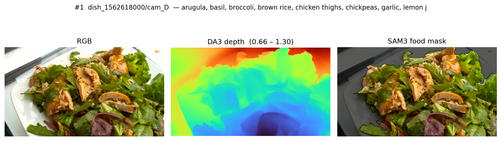

Chicken thighs & brown rice
chicken thighs, broccoli, chickpeas, arugula, brown rice, olive oil, lemon
- Calories686 kcal
- Mass448 g
- Fat36 g
- Carbs31 g
- Protein59 g
Ingredient-aware hierarchical frequency fusion for single-image food nutrition estimation.
From a single RGB photo of a plated meal — plus an optional ingredient list — we estimate calories, mass, fat, carbs, and protein. State-of-the-art on Nutrition5k.
Upload a plated-meal photo. Auto-suggest will hint at the ingredients via BLIP + CLIP; you can edit before predicting. Expected error band: ±13.52% PMAE.
Photo-based nutrition apps must turn one RGB image into five physically meaningful numbers (calories, mass, fat, carbohydrate, protein). Prior multimodal systems lean on real depth sensors and ingredient annotations that aren't available at deployment time. NutriVision combines a dual ConvNeXt-Base backbone, monocular depth from DepthAnything V3, and CLIP-encoded ingredient text through a novel Ingredient-Conditioned Frequency-Aligned Fusion Module.
The result: 13.48 % mean PMAE on Nutrition5k (best variant) — better than OmniFood8K (16.5%), IGSMNet (15.0%), and NuNet (15.65 % with real depth) — using only estimated depth and an optional ingredient list. Three retrained variants (v1 legacy loader, v2 raw-float loader with/without SSRA) all land within 13.48–13.57 %.
RGB and DA3 depth pass through a dual ConvNeXt-Base + ISM stack; CLIP-encoded ingredient text conditions both the frequency-domain fusion (IC-FAFM) and the prediction head (IA-MPH).

Refines DA3 monocular depth via global scale-shift + a local CNN residual.
Two ImageNet-22k pretrained backbones with window-attention refinement at 4 scales.
FFT split + ingredient cross-attention fuses RGB and depth at every scale.
Ingredient-gated channel selection + cross-attention head predicts 5 nutrients.
| Method | Venue | Cal | Mass | Fat | Carb | Prot | Mean ↓ |
|---|---|---|---|---|---|---|---|
| Google-Nutrition-rgb | CVPR'21 | — | — | — | — | — | 29.1% |
| Swin-Nutrition | Foods'22 | 15.5 | 12.9 | 22.1 | 18.0 | 17.5 | 17.2% |
| DPF-Nutrition | Foods'23 | 16.1 | 10.9 | 21.2 | 19.3 | 19.0 | 17.3% |
| OmniFood8K | CVPR'26 | 14.1 | 10.2 | 21.0 | 18.9 | 18.4 | 16.5% |
| NuNet (real depth) | TMM'25 | 13.3 | 10.7 | 19.4 | 17.8 | 17.1 | 15.65% |
| IGSMNet | Foods'25 | 12.2 | 9.4 | 19.1 | 18.3 | 16.0 | 15.0% |
| NutriVision (synth → N5k finetune) | — | 13.8 | 11.9 | 17.8 | 15.6 | 15.0 | 14.80% |
| NutriVision (v1, legacy depth loader) | — | 12.65 | 10.37 | 16.45 | 14.76 | 13.35 | 13.52% |
| NutriVision (v2, raw-float depth loader) | — | 12.90 | 10.30 | 16.40 | 14.80 | 13.40 | 13.57% |
| NutriVision (v2, no SSRA) | — | 12.70 | 10.30 | 16.20 | 14.90 | 13.20 | 13.48% |
SSRA & the depth loader. SSRA aims to recover physical scale from relative monocular depth, which in principle should benefit volumetrically-dependent nutrients (mass first, calories second). Empirically on Nutrition5k, the v2 raw-float depth loader modestly improves mass (10.37% → 10.30%); SSRA's contribution on top of that is at the noise floor (Δ ≤ 0.1% mean PMAE). We retain SSRA in the headline architecture for theoretical consistency with prior multi-modal nutrition systems; the deployment student model is RGB-only and drops SSRA entirely.
| Method | Setting | Cal | Mass | Fat | Carb | Prot | Mean ↓ |
|---|---|---|---|---|---|---|---|
| OmniFood8K (baseline) | RGB only | — | — | — | — | — | 8.6% |
| OmniFood8K (full) | RGB + depth | — | — | — | — | — | 7.8% |
| NutriVision (synth → 8K finetune) | RGB + ingr + DA3 depth | 9.4 | 7.8 | 10.6 | 13.1 | 13.6 | 10.89% |
Cross-finetune note: our synthetic → Nutrition5k finetune (75 epochs) already reaches 14.80% mean PMAE — 1.7% better than the OmniFood8K paper's 16.5% on the same benchmark, and our from-scratch run goes further to 13.52%.
−2.98% absolute (18.1% relative)
−1.52% absolute (10.1% relative)
−2.13% absolute — with estimated depth only
10.89% — synth → 8K finetune
12 real dishes from Nutrition5k with ground-truth nutrition. Use the arrows or swipe to scroll through the predictions.
chicken thighs, broccoli, chickpeas, arugula, brown rice, olive oil, lemon

caesar salad, roasted potatoes, pork, rice noodles, mixed greens, soy sauce

fish, eggplant, roasted potatoes, mixed greens, cherry tomatoes, olive oil

egg whites, sweet potato, salsa, olive oil

egg whites, cantaloupe, sweet potato, pineapple, olive oil

fried rice, chicken, spinach, millet, tomatoes, bell peppers, olive oil

brussels sprouts, kale, mustard greens, arugula, apple, bulgur, caesar dressing

green beans, kale, chard, olive oil

corn on the cob, chicken, green beans, mixed greens, pork, apple, olive oil

orange, ham, bell peppers

salmon, brown rice, arugula, pepper, olive oil, thyme

salmon, broccoli, cherry tomatoes, radishes, brown rice, olive oil
